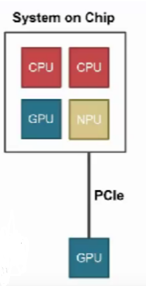
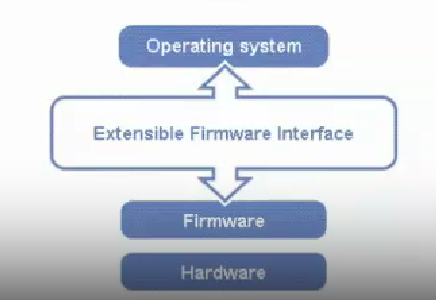

前言
本文档旨在为读者提供一个关于操作系统深入理解的指南，并在基础阶段提供必要的知识和实践任务。
本书大纲
本书从操作系统的基本概念开始，逐步深入到其内部结构和实现机制。全书分为多个章节，每个章节都围绕一个核心主题进行展开，旨在帮助读者系统地掌握操作系统的相关知识。
- 第一章：介绍了操作系统的基本概念，包括什么是操作系统、为什么要有操作系统，以及 RISC-V 作为操作系统未来发展方向的展望。
- 第二章：详细讨论了操作系统的结构，包括宏内核、微内核、外核+libOS 以及多内核/复内核等不同的架构模式，并分析了它们各自的优缺点。
- 第三章：讲解了中断、异常和系统调用的概念及其在操作系统中的作用，为后续章节中讨论系统资源管理打下基础。
- 第四章和第五章：关注于系统初始化过程，从计算机的启动、BIOS、EFI/UEFI，到 Grub、Init 与 RunLevel，再到 Risc-V 的初始化流程，为读者展示了从硬件上电到操作系统运行的整个过程。
- 第六章和第七章：提供了丰富的实践任务，包括 Makefile 的编写、链接脚本（ld script）的定制、数据结构的操作、内核模块的编程以及 Risc-V 汇编的实践等，旨在通过实践加深读者对操作系统理论知识的理解。
- 附录 A：汇总了可供参考的各种资料，为读者提供了进一步学习和研究的方向。
读者的任务
在基础阶段，读者需要了解操作系统的基本概念、结构以及初始化过程，掌握中断、异常和系统调用的基本概念和作用。同时，读者还需要完成一些实践任务，如编写 Makefile、定制链接脚本、编写内核模块和 Risc-V 汇编代码等，通过实践加深对操作系统理论知识的理解和应用。
我们鼓励读者在阅读本书的同时，积极思考并尝试解决遇到的问题，通过不断的学习和实践，逐步提高自己的能力。希望本书能够成为读者在傲来操作系统基础阶段学习道路上的良师益友。
反馈与贡献
如果您有任何意见、建议或疑问，欢迎随时通过 GitHub 上的 issues 页面进行反馈。
介绍
傲来操作系统
傲来操作系统（EulixOS）是由中科院软件所 / 中科南京软件技术研究院团队基于 openEuler 打造的操作系统发行版，其开发目标是集成软件所的最新科研成果，面向开源爱好者、科研人员和学生，为在线服务、高性能计算、AI 计算等使用场景提供一款安全、易用的操作系统。
文档概述
本文档基于傲来操作系统训练营第一期的基础阶段课程内容与作业内容，为您提供一份较为简单易用的学习指南。但请注意，您可以将本文档看作您在傲来操作系统训练营基础阶段的一份知识地图，而不是一份完整详细的教程。我们会简要介绍上课讲的知识点和完成作业所需要掌握的知识点，但不会过于详细深入。如果有兴趣，可以自行去深入了解对应方向。
第一章 - 第 1 课(上) - 操作系统简介
本章概要
在本章中，本文档将深入探索操作系统的基本概念，以及它在计算机领域中的核心地位。
首先，在第一节，本文档将从“什么是操作系统”这一基础问题出发，为初学者揭开操作系统的神秘面纱。本文档将解释操作系统的定义，分析操作系统的功能，了解操作系统在计算机里的角色。
本文档将会在第二节探讨“为什么要有操作系统”这一关键问题。本文档已经介绍过了操作系统的功能，在这部分，本文档会通过一些实际场景，为读者介绍操作系统在现在社会的重要作用。
在本章的最后一节中，本文档将介绍操作系统的未来发展方向：RISC-V。RISC-V 是一种基于精简指令集（RISC）的开源硬件指令集架构（ISA），它正逐渐成为操作系统开发的新星。本文档将介绍 RISC-V 架构的重要价值。
通过本章的学习，读者将对操作系统的基本概念、历史发展、核心功能以及未来趋势有一个全面的了解，为后续深入学习操作系统打下坚实的基础。
本章目录
什么是操作系统
本节目录
硬件和应用之间的软件层
操作系统是硬件和应用之间的软件层。
一方面它提供了硬件操作接口和系统调用，来帮助应用程序来访问和利用硬件资源，还负责应用程序的加载和调度，来确保硬件资源的有效利用；
另一方面它还控制硬件设备来完成各种功能，并且对硬件进行抽象，使得应用程序的开发者，不再需要关注于硬件的差异。
对于操作系统的位置和作用，可以参考下图：

通过上面的图，我们可以看到，操作系统与硬件之间的关系比较好理解，所以，我们接下来将会详细看看，操作系统到底为了应用提供了哪些服务和管理。
为应用提供的部分服务
在实际应用中，操作系统主要为应用提供了下面列出的一系列服务。但由于想要举出例子，必须涉及到操作系统的一些特殊名词，在编撰本文档时，默认同学们已经通过导学阶段，对于操作系统的一下名词有了初步的认识，所以建议同学们在遇到看不懂的地方时，可以复习一下涉及到的名词。
以下是操作系统为应用程序提供的具体服务内容：
- 计算资源的抽象
- CPU：通过进程或线程的调度，应用程序不再直接受限于物理 CPU 的数量。
- 内存：提供虚拟内存机制，使得应用程序的内存大小、连续性和隔离性不再受物理内存的限制。
- I/O 设备：将各种 I/O 设备统一抽象为文件接口，为应用程序提供统一的访问方式。
- 线程间的同步
- 应用程序可以实现自己的同步原语（如lock），但操作系统通常提供更高效、更底层的同步机制。
- 操作系统提供的同步原语（如futex）与线程切换紧密结合，以优化性能。
- 进程间的通信
- 应用程序可以利用网络进行进程间通信（如通过loopback 设备）。
- 操作系统提供了更高效的本地通信机制（如pipe），这些机制通常具有更丰富的语义和更优化的性能。
其它服务不再举例，有兴趣的同学可以自行了解。
应用的部分管理功能
现代应用程序普遍支持高并发，而这种对高并发的处理能力在很大程度上依赖于操作系统的支持。以下是操作系统为应用程序提供的一些关键管理功能：
-
应用生命周期管理
- 加载：操作系统负责将应用程序加载到内存中，并准备其执行环境。
- 迁移：在某些情况下，操作系统可以将正在运行的应用程序从一个物理或虚拟环境迁移到另一个环境，以保持服务的连续性和负载均衡。
- 销毁：当应用程序不再需要或发生错误时，操作系统负责清理其占用的资源并终止其执行。
-
计算资源分配
- CPU：操作系统通过调度机制，根据优先级、时间片轮转或其他策略来分配 CPU 资源给不同的应用程序。
- 内存：操作系统管理内存分配，确保每个应用程序有足够的内存空间来执行其任务，同时避免内存泄漏和溢出。
- I/O 设备：操作系统提供设备的复用和分配机制，确保多个应用程序可以安全、高效地访问共享的 I/O 设备。
-
安全与隔离
- 应用程序内部：操作系统提供访问控制机制，确保应用程序只能访问其被授权的资源，防止内部的安全漏洞和错误。
- 应用程序之间：
- 错误隔离：操作系统通过进程、线程或容器等技术实现应用程序之间的错误隔离，确保一个应用程序的错误不会影响其他应用程序的正常运行。
- 性能隔离：操作系统通过资源配额、优先级调度等技术实现应用程序之间的性能隔离，确保每个应用程序都能获得其所需的计算资源，避免资源竞争导致的性能下降。
通过上述管理功能，操作系统为应用程序提供了一个稳定、高效、安全的运行环境，使其能够支持高并发并应对各种复杂的业务场景。
为什么要有操作系统
本节目录
应用与操作系统的解耦
在最早的时候，是完全没有“操作系统”这个概念的。这时的应用程序，将所有的功能都汇聚到了一起，开发人员身兼数职，从磁盘读写到程序逻辑，一切都需亲手操持。
然而，随着技术的进步和需求的增长，应用程序的功能日益丰富，代码量也如滚雪球般不断膨胀。开发人员发现，维护这样一个庞大的、功能混杂的程序变得越来越困难。为了解决这个问题，人们开始尝试将应用程序的底层存储和逻辑工作分开，将它们各自封装成独立的模块。
这种“分化”带来了革命性的变化。开发人员可以将一些常用的底层存储和逻辑工作（如磁盘读写、内存管理等）封装成特定的模块，这些模块通过统一的接口与其他模块进行交互。这样，开发人员就可以更加专注于应用程序的核心逻辑，而无需过多关注底层细节。而这些被封装好的模块，提供了非常丰富的功能，使得我们在开发时，只需要调用这些库的接口，就能获得所需的功能，而无需从头开始编写代码。
看到这里，你是不是想到了什么？没错，这时的这些模块，其实就类似我们现在常用的“库”，只需要调用其接口，就能得到想要的结果。但是，问题来了，既然这些“库”就已经能够较优的构成应用程序了，那么为什么还需要操作系统呢？
特权级的引入
想要回答上面的问题，我们必须了解一段计算机的发展史。最早的计算机，使用纸带进行参数配置、代码录入等工作，这极为不便。后续，人们为了解决计算机计算速度远高于人类录入速度的矛盾，开发了批处理系统。但批处理系统一时间只能处理一个任务，无法同时处理多个任务，导致一旦某任务过程中，发出了 I/O 请求，CPU 就必须等待该请求完成，这段时间就导致了 CPU 资源的浪费。因此，人们再次升级计算机，开发了多道程序系统。
多道程序系统，通过时分复用计算资源的方式，在一台计算机上同时运行多个应用程序。但同时运行，就带来了一个新的问题：如何保证不同应用间的隔离？假设有两个程序，它们都能随意使用硬件设备，第一个应用希望关机，第二个应用则希望格式化硬盘，那么最终的结果就很可能是，两个应用彼此干扰，硬盘只格式化了一半。
为了解决上面的问题，人们只好引入了“特权级”的概念，至少具有两个特权级，即，位于低权限时，不能对计算机的全局状态进行任何改变；而高权限时，则集中运行能够操控整个计算机的代码。我们称这部分代码所执行后，能改变全局状态的操作，为特权操作，在高权限状态，慢慢分化出了操作系统（的内核）。
有兴趣了解更多操作系统历史的同学们，可以通过此链接，查看更多内容。
操作系统的分化
操作系统的分化阶段，大致如下图所示：

对硬件（CPU）的要求
在引入权限级后，对硬件也提出了更多的要求。
对于 CPU 来说，具体的改变如下所示：
- 将 CPU 对软件提供的接口称为 ISA
- ISA: Instruction Set Architecture，中文译作指令集架构。
- ISA 内，包含软件可见、可操作的接口，这些接口内包含各种指令和寄存器等。
- CPU 也相应分化出两个模式：非特权模式和特权模式
- 非特权模式 ISA：应用可使用的指令和寄存器
- 特权模式 ISA：只有操作系统才可使用的指令和寄存器
通常，我们将特权模式称为内核态，将非特权模式称为用户态。将从用户态切换到内核态的指令，称为特权指令。
操作系统的两种演化
- 外部 -> 接口的演化：更好地应对新场景
- POSIX 接口：定义了一组系统调用的接口，用来为应用提供兼容性
- Linux：系统调用不断有新的加入、旧的退出
- 鸿蒙：分布式软总线等
- 内部 -> 架构的演化：
- 更好地应对复杂性：宏内核架构、微内核架构、外核架构、多内核架构等
- 为了更好的扩展性、容错性、安全性、兼容性、灵活性、性能等
对于上面的演化内容，大家可以依照自己兴趣和时间安排，进行了解。
目前操作系统的关键作用
以下部分，引用了老师的 PPT：


RISC-V：操作系统的未来发展方向
本节目录
什么是“指令集”
指令集架构(Instruction Set Architecture，ISA)，简称指令集，是计算机系统中硬件与软件之间分界线和交互规范标准，，也是软硬件生态的起始原点。其位于计算机内的地位如下图所示：

对于当前的指令集领域，尚未形成一套国际通用的标准。与操作系统采用 Posix 作为标准、数据库采用 SQL 作为标准的情况不同，指令集尚未实现标准化。这意味着，指令集的标准化工作仍在进行之中。其中，RISC-V 作为一种新兴的指令集架构，正逐渐崭露头角。
RISC-V 指令集=基础指令集+标准扩展指令集+用户自定义扩展指令集，而软件则是目前 Risc-V 生态中最关注的部分。现在已形成的 RISC-V 软件生态栈如下图所示：

Risc-V 的重要价值
对于我国而言，我们的基础软件领域暂时存在一定的短板，而 RISC-V 带来的“造轮子”的机会，恰好可以弥补这一空白。其可能的应用如下图所示：

第二章 - 第 1 课(下) - 操作系统结构
本章概要
在本章中，本文档将进一步深入探索操作系统的结构部分。操作系统的结构决定了其如何管理计算机硬件和软件资源，如何为用户提供高效、安全和稳定的服务。本章将详细阐述操作系统结构的重要性，分析不同的操作系统架构，并探讨它们对系统性能和功能的影响。
首先，本文档将在第一节讨论操作系统结构的重要性。随着计算机系统的不断发展和复杂化，操作系统的结构也变得越来越重要。一个合理的操作系统结构可以有效地降低系统的复杂性，提高系统的可维护性和可扩展性。本文档将通过一些实际例子（如 Workplace），说明复杂性对操作系统设计和实现的影响，并探讨如何通过分离策略与机制来降低复杂性。
接下来，本文档将按照操作系统架构的历史演进，进行剩余节的讲解。第二节将会较为详细的介绍现代的宏内核、微内核架构。第三节将会主要介绍外核+库 OS 架构，第四节将会介绍多内核/复内核架构。
本文档将在各自的节，分析不同架构的特点和优缺点，并探讨它们在不同应用场景下的适用性。通过这些讲解，读者将会进一步理解在第一节中给出的，不同架构的示意图和实例，和各种架构之间的差异和联系。
通过对本章的学习，读者将对操作系统的结构有更深入的理解，掌握不同架构的特点和优缺点，为后续项目阶段的选择提供基本的介绍。
本章目录
结构的重要性
本节目录
复杂性
1991-1995 年，IBM 公司投入 20 亿美元打造 Workplace 操作系统，然而，由于目标过于宏伟，系统过于复杂等种种原因，导致该项目最终失败，20 亿美元的投资打了水漂。同时，此项目的失败，也间接导致 IBM 全力投入扶植 Linux 操作系统。
上面的这个例子，应该可以让同学们看到，整个操作系统的复杂性有多么可怕。而在深入分析其“复杂性”来源时，我们可以发现：在操作系统内部，不同目标之间往往存在冲突，而在不同需求之间又需要进行权衡。
对于用户来说，操作系统应该方便使用、容易学习、功能齐全、安全流畅；但对于整个系统目标来说，操作系统应该容易设计与实现，容易维护，具有高灵活性、高可靠性和高效性。这就导致操作系统的复杂性居高不下。
想办法降低其复杂性
而为了降低其复杂性，计算机科学家们提出：要将策略和机制进行分离，操作系统只能通过调整策略而不是机制来适配解决实际问题。
以调度算法为例，RR、FIFO 等都是策略，但调度队列、对线程的表示等，都是机制。
历史上的架构与其演进
接下来，我们会给大家展示架构的发展历史和各种架构的对比。


宏内核 & 微内核
本节目录
什么是宏内核
在宏内核架构下，整个系统被分为内核与应用两层，内核运行在特权级，集中控制所有计算资源，应用运行在非特权级，受内核管理，使用内核提供的各种服务。更简明的解释如下图所示：

宏内核的优点
- 丰富的沉淀和积累：宏内核经过多年的发展，积累了丰富的功能和优化。
- 巨大的统一的社区和生态：拥有庞大的用户群体和开发者社区，生态完善。
- 针对不同场景的优化：经过 30 年的优化，宏内核能够针对各种场景提供高效的支持。
宏内核的缺点
- 安全性与可靠性问题：模块之间缺乏强隔离机制，可能导致安全隐患和可靠性问题。
- 实时性支持：由于系统复杂，难以进行最坏情况时延分析，不利于实时应用。
- 系统过于庞大：如 Linux 等宏内核系统代码行数庞大，可能阻碍了创新和灵活性。
- 扩展性
- 向上扩展：难以剪裁和扩展宏内核系统以支持从 KB 级别到 TB 级别的不同场景。
- 向下扩展：同样存在扩展性挑战，难以满足极小化系统的需求。
- 硬件异构性：难以长期支持定制化的方式解决特定硬件问题。
- 功能安全：例如 Linux，很难通过严格的功能安全认证（如汽车安全完整性认证 ASIL-D）。
- 信息安全：单点错误可能导致整个系统出错，存在大量已知的安全问题（CVE）。
- 确定性时延：虽然 Linux 花费了多年时间合并实时补丁，但目前仍不确定是否能支持确定性时延要求。
什么是微内核
在微内核架构下，采用“最小化内核功能”的方式，将操作系统功能移到用户态，称为"服务"(Server)，而在用户模块之间，使用消息传递机制通信。下图所示为微内核架构：

微内核的优点
- 易于扩展：直接添加一个用户进程即可为操作系统增加服务。
- 易于移植：大部分模块与底层硬件无关。
- 更加可靠：在内核模式运行的代码量大大减少。
- 更加安全：即使存在漏洞，服务与服务之间存在进程粒度隔离。
- 更加健壮：单个模块出现问题不会影响到系统整体。
微内核的缺点
- 性能较差：内核中的模块交互由函数调用变成了进程间通信。
- 生态欠缺：尚未形成像 Linux 一样具有广泛开发者的社区。
- 重用问题：重用宏内核操作系统提供兼容性，带来新问题。
下面的图可以直观展示出微内核的性能缺陷：

有兴趣研究微内核的同学，可以自行查找相关资料学习。
宏内核 vs 微内核
下面，我们对比一下宏内核和微内核。
它们的一个非常大的区别，在于共享数据状态。宏内核中，大量的共享状态在内核态；而微内核里，部分数据在内核态，部分在用户态。

其次，在性能上，我们在上一部分已经展示出，对于某些情况下，微内核的性能会比宏内核差很多。
对于实际的操作流程，以“创建文件”为例：

混合内核架构
既然宏内核和微内核各有优缺点，那么有没有一种架构，能够结合两者的优点，同时避免两者的缺点呢？
答案是有的，这就是混合内核架构。

混合内核架构，将需要性能的模块重新放回内核态，所以可以同时具备宏内核和微内核的优点，同时避免两者的缺点。
- Windows NT：微内核+内核态的系统服务+系统框架
- macOS/i0S：Mach 微内核+BSD4.3+系统框架
外核 + libOS
本节目录
什么是外核与 libOS
外核：
- Exokernel 不提供硬件抽象
- “只要内核提供抽象，就不能实现性能最大化"
- 只有应用才知道最适合的抽象(end-to-end 原则)
- Exokernel 不管理资源，只管理应用
- 负责将计算资源与应用的绑定，以及资源的回收
- 保证多个应用之间的隔离
库 OS(Libos)：
- 策略与机制分离：将对硬件的抽象以库的形式提供
- 高度定制化：不同应用可使用不同的 LibOS，或完全自定义
- 更高性能：Lib0s 与应用其他代码之间通过函数调用直接交互
对于外核，图示如下：

外核拥有与宏内核和微内核不同的功能，因此也提出了新的技术。
为了追踪计算资源的拥有权，采用了安全绑定(Secure binding)；为了保证资源的保护，采用了显式回收(Visible revocation)；同时，为了能够回收对资源的访问权，额外增加了中止协议(Abort protocol)。建议同学们对这部分内容进行自学。
单内核
LibOS 可以进一步拓展为单内核，即一个内核管理多个应用。
单内核可以看做虚拟化环境下的 LibOS，每个虚拟机只使用内核态，在内核态中只运行一个应用和 LibOS，同时，通过虚拟化层实现不同实例间的隔离。
单内核非常适合容器应用场景，因为每个容器就是一个虚拟机，而且每个容器运行定制的 LibOS，可以有效提高性能。
对于单内核的开源项目，我们搜集到以下内容，感兴趣的同学可以进行自学：
- Rumprun：POSIX 接口，BSD 兼容的运行时环境，运行在 Xen 虚拟化平台之上
- Drawbridge：来自微软，兼容 Win32 接口的运行时环境
- OSv：与 Linux 兼容的应用环境，单地址空间
同时，既然涉及到“LibOS”，就可以回到我们上一章提到的问题：操作系统能不能作为一个库？对于这个问题，有人提出了“Linux as a LibOS”，将 Linux 作为 LibOS 或 Unikernel 运行，但引入了很多新问题：
- Linux 是否适合作为 LibOS/unikernel?
- fork()如何处理?
此技术尚在探索阶段，感兴趣的同学可以进行自学。一个类似的例子是：LKL-Linux kernel library(https://github.com/lkl)
外核的优点
- OS 无抽象，能在理论上提供最优性能
- 应用对计算有更精确的实时等控制
- LibOS 在用户态更易调试，调试周期更短
外核的缺点
- 对计算资源的利用效率主要由应用决定
- 定制化过多，导致维护难度增加
外核 VS 虚拟机
以下是对于外核与虚拟机的对比，感兴趣的同学可以搜集相关资料自学。

多内核 / 复内核
本节目录
使用多内核架构的背景
- 现在的 OS 内部维护很多共享状态
- Cache 一致性的保证越来越难
- 可扩展性非常差，核数增多，性能不升反降
- GPU 等设备越来越多
- 设备本身越来越智能--设备有自己的 CPU
- 通过 PCle 连接，主 CPU 与设备 CPU 之间通信非常慢
- 通过系统总线连接，异构 SoC(Syslem on Chip)
对于 System on Chip，来说，其图解如下所示： 
以上的一系列背景，就使得使用多内核架构逐渐成为更优的解决方案。
使用多内核架构的原因
- 可以适配众核硬件平台
- 现有的 OS 架构在多核情况下，存在内核资源争用问题
- 现有的 OS 架构难以应对，应用混合部署下的性能隔离问题
- 现有的 OS 架构在异构硬件环境下资源利用率低
使用多内核架构的实例

第三章 - 第 2 课(全) - 中断、异常与系统调用
本章概要
本章主要讨论了操作系统中三个核心概念：中断、异常和系统调用。这些概念在操作系统的设计和实现中起着至关重要的作用，它们共同构成了操作系统内核与用户空间程序之间交互的基础。
第一节内，我们讲了中断和异常。中断是计算机系统中一种重要的同步机制，用于通知 CPU 有外部事件或内部条件发生，需要 CPU 立即处理。当中断发生时，CPU 会暂停当前正在执行的程序，保存应用上下文，并跳转到相应的中断服务程序（ISR）去处理中断事件。处理完毕后，CPU 会恢复之前保存的现场信息，并继续执行被中断的程序。中断使得 CPU 能够高效地处理多任务，实现并发执行。
而异常是程序执行过程中发生的错误或异常条件，如除零错误、非法指令等。它与中断不同，异常是由 CPU 内部检测到的，并且通常是由程序错误导致的。CPU 会跳转到相应的异常处理程序去处理异常事件。异常处理完成后，CPU 会根据异常的性质选择恢复程序执行或终止程序。我们在第一节的末尾，将两者进行了对比。
之后的第二节，我们涉及到了系统调用。它是用户空间程序请求操作系统内核服务的一种机制。系统调用是用户空间与内核空间之间交互的桥梁，它使得用户空间程序能够访问底层硬件资源、执行特权操作以及实现进程管理、文件访问等功能。系统调用的实现依赖于中断机制，当用户空间程序发出系统调用请求时，CPU 会陷入内核态并执行相应的系统调用处理程序。我们在节内，进一步讨论了提高其性能的可能性。
本章目录
中断和异常
本节目录
中断与轮询
首先，我们假想一下，我们正在设计一个操作系统，现在，我们需要为它提供键盘支持。那么，我们如何实现这个功能？
一种方法是，我们使用轮询的方式，即，我们定期检查键盘的状态，如果键盘有输入，我们就处理它。但是，这种方式有一个问题，就是，如果键盘没有输入，那么，我们就会白白浪费 CPU 资源。那么，有没有更好的方法呢？有的，这就是中断。
中断是一种异步的事件处理机制。当某个事件发生时，操作系统会自动调用相应的处理函数来处理该事件。这样，我们就不用一直轮询键盘的状态了。
从上面这个例子，可以举一反三到更多的场景，如下图所示：

中断与异常的定义
中断和异常的通用概念如下：
- 中断(Interrupt) —— 异步异常
- 外部硬件设备所产生的信号
- 异步：产生原因和当前执行指令无关，如程序被磁盘读打断
- 异常(Exception) —— 同步异常
- 软件的程序执行而产生的事件
- 同步：产生和当前执行或试图执行的指令相关
处理流程
CPU 的执行逻辑很简单：
- 以 PC 的值为地址从内存中获取一条指令并执行
- PC+=4，goto 1
而在上面的执行过程中，可能发生以下两种情况：
- 指令执行出现错误，比如除零或缺页(同步异常)
- 外部设备触发中断(异步异常)
上面的这两种情况，在 RISC-V 平台称为「异常」和「中断」。在检测到上面两种情况时，OS 会进入“trap”。

具体的 trap 处理各阶段的工作，需要同学们根据老师上课教学内容，进行学习。
trap 定义
- 控制流(Control Flow)：
- Branch
- Jump
- 异常控制流(ExceptionalControlFlow，ECF)：
- exception
- interrupt
在 Risc-V 下，ECF 统称为 trap。
对于 OS 来说，想要实现 trap，总共分为下面两步：
- 实现对异常向量表的设置
- CPU 上电后立即执行，这是系统初始化的主要工作之一
- 在开启中断和启动第一个应用之前执行完毕
- 实现对不同异常(中断)的处理函数
- 处理应用程序出错的情况：如除零、缺页
- 一类特殊的同步异常：系统调用（我们会在下一节详细介绍），由应用程序来主动触发
- 处理来自外部设备的中断：如收取网络包、获取键盘输入等
在处理 trap 时使用到的寄存器

相关寄存器的参数内容，请同学们参考 RISC-V 手册等参考资料进行自学。
异常处理函数
异常处理函数在核心态，可以访问所有资源。处理器将异常类型存储在指定寄存器中（例如，cause），表明发生的是哪一种异常。异常处理函数根据异常类型执行不同逻辑。
当异常处理函数完成异常处理后，可以通过以下操作之一转移控制权：
- 回到发生异常时正在执行的指令
- 回到发生异常时的下一条指令
- 结束当前进程
中断和异常的对比

系统调用
本节目录
特权级
系统调用需要特权级机制的支持。在 Risc-V 中，特权级如下表所示：

跟踪系统调用
假设有代码：
int main() {
write(1,"Hello world!\n",13);
return 0;
}
我们可以通过下面命令跟踪系统调用：
$ strace -o hello.out ./hello
参数与返回值
系统调用的参数和返回值都是通过寄存器传递的。
- 最多允许 8 个参数：a0-a7
- a7 用于存放系统调用编号
- 调用者保存的寄存器必须在用户态保存
- 返回值存放于 a0 寄存器中
但是，如果出现，系统调用的传参过多，无法直接使用寄存器放下，该怎么办呢？
朴素的解决方案是，通过将指针写入寄存器，然后由内核去访问指针指向的空间，但这可能会导致一系列的安全问题。因此，就需要验证其是否合法。对于此部分内容，需要同学们跟着老师学习，并且掌握 Linux 解决此问题的方案。
提高性能
在对系统调用进行性能分析时，能够发现，主要的开销在于系统调用切换。因此，为了进一步提高性能，系统调用的时延不可忽略，尤其是调用非常频繁的那些，如 gettimeofday()。它的大部分时延都是由于 U->S/M 的模式切换带来的，如果没有模式切换，那么就不需要保存回复状态，就能够大幅降低系统调用的时延。
对于其，可以采用如下方式优化： 将 gettimeofday 的代码加载到一块与应用共享的内存页，这个页称为：vDSO(Virtual Dynamic Shared Object)，然后，将 Time 的值同样映射到用户态空间(只读)，但只有在内核态才能更新这个值。
不仅仅是 gettimeofday()，其它大部分的系统调用的大量时延，都是用来做状态的切换（保存和恢复状态、权限的切换）。还有一部分的时延，是因为（Cache pollution）。那么，是否有可能在不切换状态的情况下实现系统调用?
一个可行的解决方案是，引入了一个新的 syscall 机制：
- 引入 system call page，由 user & kernel 共享
- User threads 可以将系统调用的请求 push 到 system call page
kernel threads会从system call pagepollsystem call 请求
性能提高的剩余内容，需要同学们跟随老师讲解学习。
第四章 - 第 3 课(上) - 系统初始化
本章概述
本章将深入探讨计算机从完全关闭状态到完全加载操作系统和用户界面的完整初始化过程。我们将首先在第一节简要了解计算机的启动流程，包括加电自检（POST）和内核启动等关键步骤。
接着，我们将在第二章简要介绍 BIOS（基本输入输出系统）的作用、功能、物理位置以及基本结构，因为它是计算机启动过程中不可或缺的一部分。
随后，我们将主要介绍 EFI（可扩展固件接口）和 UEFI（统一可扩展固件接口）的介绍，这是现代计算机启动过程中逐渐取代 BIOS 的新技术。我们将探讨 EFI/UEFI 的简介、它们与 BIOS 的主要区别、其结构以及当前在业界的应用进展。
最后一节内容，我们将会基于 Linux 系统启动的过程，介绍剩下的阶段，包括 Grub、Init、RunLevel 等。同时，会简要介绍目前这些阶段的进展，以及未来可能的发展方向。
本章目录
计算机的启动
本节目录
流程概要

在计算机启动的过程中，BIOS 会首先进行加电自检，然后加载操作系统内核。计算机先进行硬件部分的加载，然后进行对于软件部分（即 OS）的加载，然后跳转到内核中执行。
硬件 - 加电自检
在这一部分，我们会介绍加电自检。它的基本过程如下：
- 初始化 BIOS
- 检查 CPU 寄存器检查 BIOS 代码的完整性
- 检查 DMA、timer、interrupt controller
- 检查系统内存
- 检查系统总线和外部设备
- 跳转到下一级 BIOS(如 VGA-BIOS)执行并返回
- 识别可以启动的设备(CD-ROM？USB？HDD？)
但这一部分就涉及到了一个问题：由谁来执行这些检查？这一问题，我们将在下一节回答。
软件 - 内核启动
在 BIOS 执行完加电自检之后，它会将控制权交给操作系统内核。此时，操作系统主要会进行两个任务：
- 配置页表并开启虚拟内存机制，允许使用虚拟地址
- 配置异常向量表并打开中断，允许“双循环”
同学们通过听课学习，应该要掌握：
- 页表究竟该如何具体配置?
- 异常向量表如何配置?
- 开启地址翻译的前一行指令使用物理地址，开启后立即使用虚拟地址，前后如何衔接?
- 打开后，异常处理的指令流如何流动?
BIOS
本节目录
BIOS 简介
BIOS：Basic Input/Output System，基本输入输出系统
BIOS 主要兴盛于 20 世纪 70 年代到 90 年代，它是一个固件（Firmware）程序，用于管理计算机硬件设备，并提供一些基本的输入输出功能。
BIOS 的作用
- 在计算机开机时对系统各组件进行检查
- 加载引导程序或操作系统
- 向操作系统提供系统配置信息
- 向操作系统提供硬件访问接口，向操作系统隐感硬件的变化
- 现代操作系统会忽略 BIOS 提供的抽象层并直接访问硬件
BIOS 的功能
BIOS 中主要存放以下程序段：
- 自诊断程序：
通过读取 CMOSRAM 中的内容，识别硬件配置，并对其进行自检和初始化。 - CMOS 设置程序：
引导过程中，用特殊热键启动，进行设置后，存入 CMOS RAM 中。 - 系统自检装载程序：
在自检成功后，将磁盘 0 磁道 0 扇区上的引导程序装入内存，让其运行以装入系统。 - 主要 IO 设备的驱动程序和中断服务
BIOS 的结构
BIOS 的物理结构
BIOS 的物理结构主要体现在其存储方式上。BIOS 代码通常存储在一个只读存储器（Read-Only Memory，ROM）芯片中，这种芯片能够在计算机断电后仍然保留数据，因此，计算机每次启动时都能执行相同的 BIOS 代码。这种存储方式保证了 BIOS 的稳定性和可靠性。
BIOS 代码的结构
BIOS 代码的结构主要指的是 BIOS 程序的组织方式。BIOS 程序通常包括以下几个部分：
- 启动自检程序（POST）：计算机启动时首先执行的是自检程序，它负责检测计算机硬件设备是否正常，包括内存检测、显卡检测、硬盘检测等。
- 设置程序：如果自检通过，BIOS 会执行设置程序，允许用户配置计算机的一些基本参数，如启动顺序、内存速度等。
- 启动加载程序：设置完成后，BIOS 会根据用户设定的启动顺序，从硬盘、光驱或其他存储设备中加载引导记录（Boot Record），并将控制权转交给引导记录中的操作系统。
- 中断服务程序：BIOS 还提供了一系列的中断服务程序（Interrupt Service Routines，ISRs），这些程序可以在操作系统运行期间被调用，用于处理硬件设备的输入输出请求。
- CMOS 配置：BIOS 使用 CMOS（互补金属氧化物半导体）电路来存储计算机的配置信息。CMOS 是一种低功耗的静态随机存储器（SRAM），它由一个小型电池供电，即使在计算机关闭的情况下也能保持数据不丢失。
EFI / UEFI
本节目录
EFI / UEFI 简介
在上一节提到，BIOS 主要流行于 1970s 到 1990s，因为计算机硬件设备种类繁多，而 BIOS 只能识别硬件设备，无法识别软件设备，而不再能满足计算机硬件设备日益复杂的需求。因此，1990s 后，出现了 EFI / UEFI。
Intel 提出了，使用 EFI(Extensible Firmware Interface)取代 BlOS interface 。
2005 年，Intel 再次提出用 UEFI(Unified Extensible Firmware Interface)取代 EFI。
下图展示了 EFI 的架构位置：

EFI / UEFI 与 BIOS 的区别
首先，对于编程语言来说，BIOS 主要使用汇编语言，而 EFI 主要使用 C 语言。EFI 是用模块化的思想，借助动态链接的形式构建的系统，较 BIOS 而言更易于实现，容错和纠错特性更强，缩短了研发时间。
其次，对于 BIOS 具有的三大任务：
- 初始化硬件
- 提供硬件的软件抽象
- 启动操作系统
UEFI 具有三大优势：
- 标准接口
- 开放统一
- 开源
同时，EFI 运行于 32 位或 64 位模式，突破了传统 16 位代码的寻址能力。而 BIOS 的硬件服务程序都以 16 位代码的形式存在，这就给运行于增强模式的操作系统访问其服务造成了困难。
而且，EFI 系统下的驱动并不是由可以直接运行在 CPU 上的代码组成的，而是用 EFIByte Code 编写而成的。这是一组专用于 EFI 驱动的虚拟机器语言，必须在 EFI 驱动运行环境下被解释运行。这就保证了充分的向下兼容性。
因此，EFI 和 UEFI 才能够被广泛接受。
EFI / UEFI 的结构
更加具体的 EFI 的架构位置如下图所示：

EFI / UEFI 当前进展
当前，对于 UEFI 应用的一个典型例子是 LinuxBoot：

感兴趣的同学们可以参考：
Grub、Init 与 RunLevel
本章目录
- Grub 简介
- Init 简介
- RunLevel 简介
- 目前进展（init->systemd）
Linux 启动流程
在 Linux 系统下，启动流程如下：

引导程序 - bootloader
bootloader，即引导程序，是开机时，引导操作系统启动的程序。
BIOS 在完成硬件检测和资源分配后，将硬盘 MBR 中的 bootloader 读到系统的 RAM 中，然后将控制权交给 bootloader。
bootoader 的主要任务就是将操作系统内核从硬盘加载到 RAM 中，然后跳转到内核的入口点去执行，即启动操作系统。
常见的 bootloader 有：Grub，isolinux，uboot，openSBl，ntldr(用于启动 Windows 系统)，Linuxboot等。
操作系统需要被加载到内存中正确的位置，且需要程序为操作系统提供启动参数，以实现定制化启动，所以需要 bootloader。
Grub 简介
Grub 是 Linux 上最常用的 bootloader。它是一个来自 GNU 项目的启动引导程序。GRUB 允许用户可以在计算机内同时拥有多个操作系统，并在计算机启动时选择希望运行的操作系统，也就是说，我们可以通过 Grub，使用链式引导来引导 Windows 系统。
它支持所有的 Linux 文件系统，也支持 Windows 的 FAT 和 NTFS 文件系统，也支持图形界面，可定制启动菜单和背景图片，支持鼠标。同时，它拥有丰富的终端命令，用户可以查看硬盘分区的细节，修改分区设置，临时重新映射磁盘顺序，从任何用户定义的配置文件启动。
感兴趣的同学们可以去自行深入了解 Grub。
Init 简介
初始化（Init）程序负责操作系统的初始化操作，它基于/etc/inittab（定义了系统默认运行级别）设定的动作来执行脚本。以下是初始化流程的主要步骤：
-
执行
/etc/rc.d/rc.sysinit脚本- 真正的 OS 初始化脚本。
-
激活 udev 和 SELinux
- udev 管理设备节点和它们的符号链接。
- SELinux（如果启用）是 Linux 的一个安全模块。
-
设定内核参数
- 根据
/etc/sysctl.conf文件来设定内核参数。
- 根据
-
设定系统时钟
- 确保系统时间正确。
-
装载硬盘映射
- 加载硬盘相关的映射或配置。
-
启用交换分区
- 激活交换空间以扩展系统内存。
-
设置主机名
- 设置系统在网络中的名称。
-
根文件系统检测与重新挂载
- 以读写方式重新挂载根文件系统，并在挂载前进行检测。
-
激活 RAID 和 LVM 设备
- 如果配置有 RAID 或 LVM，则激活这些设备。
-
启用磁盘配额
- 根据配置，启用文件系统上的磁盘配额。
-
检查并挂载其他文件系统
- 根据
/etc/fstab文件，检查并挂载其他文件系统。
- 根据
-
清理过期的锁和 PID 文件
- 清除在系统启动过程中可能不再需要的锁文件和 PID 文件。
-
执行对应启动级别的脚本
- 根据配置的启动级别，执行对应目录（如
/etc/rcX.d/，其中X是运行级别）下的脚本。
- 根据配置的启动级别，执行对应目录（如
-
执行
/etc/rc.d/rc.local脚本- 这是系统初始化过程中的最后一个通用脚本，用户可以在这里添加自定义的启动命令。
系统启动完成
- 执行完以上步骤后，系统启动完成，等待用户登录或其他进一步的操作。
RunLevel 简介
runlevel，即运行级别，是 Linux 系统中的一个概念。 Linux 的启动级别定义了系统启动时应该运行哪些服务。
运行级别有如下的分类：
- 0: 关机模式
- 1: 单一用户模式（直接以管理员身份进入）
- 2: 多用户模式（无网络）
- 3: 多用户模式（命令行）
- 4: 保留（通常不使用）
- 5: 多用户模式（图形界面）
- 6: 重启
运行级别对应的脚本目录如下所示：
- Run level 0:
/etc/rc.d/rc0.d/ - Run level 1:
/etc/rc.d/rc1.d/ - Run level 2:
/etc/rc.d/rc2.d/ - Run level 3:
/etc/rc.d/rc3.d/ - Run level 4:
/etc/rc.d/rc4.d/ - Run level 5:
/etc/rc.d/rc5.d/ - Run level 6:
/etc/rc.d/rc6.d/
在上述目录中，脚本的命名遵循以下规则：
- K 开头的文件：表示在启动时需要关闭的服务。
- S 开头的文件：表示在启动时需要启动的服务。
目前进展（init->systemd）
对于 Init 阶段来说，它具有一些问题：
- 启动时间长。ini 进程是串行启动，只有前一个进程启动完才会启动下一个进程。
- 启动脚本复杂。脚本需要自己处理各种情况，这往往使得脚本变得很长。
为了解决上述问题，Linux 系统引入了 Systemd 系统。感兴趣的同学们可以自行了解。
第五章 - 第 3 课(下) - Risc-V 的初始化
本章概述
在上一章内容里，我们介绍了系统的初始化流程，并且以 Linux 系统为例，介绍了 Linux 系统启动的各个阶段。本章则详细介绍了 Risc-V 架构下的系统初始化过程，包括从启动流程、链接脚本、页表和异常向量的设置等内容。
在第一节，我们会讲一下 Risc-V 设备的一般的启动流程。我们会介绍到 bootloader 和链接脚本（Linker Script），它们扮演着重要的角色。链接脚本定义了如何将程序的不同部分（如代码、数据和栈）映射到内存中的不同位置，也是我们编写内核过程中需要掌握的终点。
在第二节，我们延续上一章介绍过的页表和异常向量的初始化过程，只需要同学们稍作了解，具体的细节会在下一阶段详细介绍。
在第三节，我们描述了从系统上电到操作系统开始运行的过程。我们将介绍几个重要的引导加载程序，即 OpenSBI 和 U-Boot，它们在系统启动过程中扮演着桥梁的角色，负责初始化硬件、加载操作系统镜像等任务。此外，我们还将探讨 DeviceTree 和 UEFI 在 Risc-V 系统初始化中的作用，以及它们之间的对比和特点。
本章目录
启动流程和链接脚本
本节目录
一般启动流程
对于 Risc-V 开发板，我们仍然以 Linux 系统为例，其一般的启动流程如下：
- 板子上电后，CPU 从固定地址运行 ROM 中的代码
- ROM 包含简单的设备驱动，从 fash 或者 SD 卡中加载 bootloader
- 再由 bootloader 加载内核、initramfs 等到内存，跳转到 Linux 内核启动
在一个基于全志 D1 硬件平台的启动流程内，主要涉及到 SPL（Secondary Program Loader）、U-Boot 和 Linux 操作系统。在这个流程中，它们的角色和各自的加载地址如下：
SPL，二级程序加载器，通常位于设备的 ROM（只读存储器）中。它是最先被执行的代码，负责执行一些基本的硬件初始化和准备工作。SPL 的任务主要就是将下一级的引导加载器（如 U-Boot）从存储设备加载到 RAM 中。
U-Boot，一个开源的引导加载器，广泛用于嵌入式系统。在这个流程中，U-Boot 是由 SPL 从存储设备加载到 RAM 中，并从物理地址 0x4a00_0000 开始执行。U-Boot 会将 Linux 内核镜像从存储设备加载到 RAM 中的某个位置，并设置必要的启动参数，然后将控制权传递给 Linux 内核。
Linux 是最终要执行的操作系统。在这个流程中，Linux 内核从物理地址 0x4200_0000 开始执行。
感兴趣的同学们可以通过以下资料获取相关内容： 参考资料
链接脚本
链接脚本（Linker Script）是用于定义如何将程序的不同部分（如代码、数据、栈等）映射到内存中的文件。在嵌入式系统和操作系统开发中，链接脚本是一个非常重要的文件，因为它决定了程序在内存中的布局和大小。
在 Risc-V 系统中，链接脚本通常使用特定的语法来描述内存布局和符号地址。它定义了程序的各个段（如代码段、数据段、BSS 段等）的起始地址和大小，以及它们之间的相对位置。链接器（Linker）在编译过程中使用链接脚本来确定程序的最终内存布局，并生成可执行文件或镜像文件。
对于链接脚本来说，同学们需要了解程序的编译过程，具体要了解到代码段的更细的划分、数据段的更细的划分，需要同学们进行自学，可以在下面资料进行参考：参考资料。
内核代码
内核代码是操作系统的核心部分，负责管理硬件资源、提供系统服务以及运行用户程序。在 Risc-V 系统中，内核代码通常使用 C 语言（或汇编语言）编写，并遵循特定的编程规范和接口标准。
对于内核代码，其二进制从.head.text 开始，剩余内容，请同学们跟着老师的课程进行学习，主要会讲解到 Linux 下的地址映射、内核运行的代码顺序等知识点。
初始化
本节目录
页表和 MMU
- Linux 内核运行需要 MMU 启用
- 内核刚开始运行，MMU 未启用
- 需要写好一个页表将内核映射到高地址，然后启用 MMU
Risc-V 页表初始化
setup_vm 初始化启动用到的两个页表：
trampoline_pg_dir：启用 MMU 前后所用，映射启用 MMU 的代码到高地址early_pg_dir：内核最初启动的时候所用，映射整个内核到高地址
具体的实现逻辑，请自学或参照老师的课程进行学习。
启用 MMU 前后
relocate_enable_mmu 用于启用 MMU，并跳转到高地址继续执行：
- 使用
trampoline_pg_dir衔接 - 启用 MMU
- 返回后
pc在高地址
这一部分涉及到一个问题：内核启动时从 0x4020_0000 开始，而内核代码需要在 0xFFFFFFFF80000000 运行。如何配置 MMU 来完成这个切换?
通过配置 MMU 来完成这个切换的方法是：
直接设置返回地址加上偏移量的结果，将其变成高地址，这样在返回后就能正确运行了。
Risc-V 异常向量初始化
通过 setup_trap_vector 初始化异常向量：
- RISC-V Linux 使用一个统一的入口点 handle_exception 来处理异常和中断
- scratch=0 表示异常从内核态发生
- sscratch ≠ 0 时，它指向一个 task_struct 结构体，表示异常从用户态发生
- RISC-V 的系统调用也被视为一种异常处理
小结
在 Risc-V 初始化过程中，主要完成以下任务：
- 设置初始化时的简单页表 early_pg_dir，并开启虚拟内存机制（MMU）
- 设置异常向量 stvec 指向 handle_exception 函数
- 在处理异常之前保存进程上下文
- 在返回进程之前恢复其上下文
Risc-V 设备从上电到运行
本节目录
流程（OpenSbi 和 U-boot）
这一部分，我们以常用的基于 U-Boot 和 OpenSBl 的启动流程为例。
通过上一章的学习，我们知道，在上电之后，会从 ROM 中开始执行代码， 在 SoC(System on Chip)架构下， 芯片内部包含一块 ROM，保存了一些简单的驱动，同时会从 SD 卡或 fash 加载 U-Boot SPL 到一块小内存中(单独的 SRAM 或 L2cache-as-RAMM)。然后会又 U-Boot SPL 进行最早的初始化，主要是初始化 DDR 内存、时钟等最重要的设备，并且从 SD 卡加载 OpenSBI 和 U-Boot 本体到 DDR 内存，然后跳转到 OpenSBI 运行。
对于 OpenSBI 和 U-Boot 来说，它们执行下面工作： OpenSBI：
- 初始化 IPI 和时钟设备
- 初始化自身准备好提供 SBI 服务
- 切换到 Supervisor mode，跳转到 U-Boot
U-Boot：
- 从预先配置的启动设备加载内核到内存(来源可以是 SD 卡、NVMe、网络……)
- 跳转到内核入口点
之后，操作系统就能够开始运行了。
DeviceTree
那么，软件如何获知机器上有哪些功能和设备呢？
对于 ROM 来说，其内部的代码比较固定，可以在直接代码里对照硬件资源编写。但对于通用的操作系统，例如 Linux 内核，如何在各种机器上都可以运行?
对于嵌入式设备来说，解决获知设备问题的方法是 Devicetree。
- 文本格式(Devicetree source,DTS)和二进制格式(Flattened devicetree,FDT 或 DTB)
- 包含设备信息、MMIO 地址、中断连接方式、时钟复位电源连接方式等信息
- 与内核同时加载到内存中，跳转到各软件入口点时传入地址
- 惯例:a0 是当前核心的 hartid，a1 是内存中 FDT 的物理地址
- (U-Boot 和 OpenSBl 为了方便及复用 devicetree 已经完成的工作，也用 FDT 获得硬件配置)
Risc-V UEFI
RISC-V 机器固件也可以提供 UEFI 接口
- 提供 PCle 控制器的驱动，可以以通用方式访问 PCle 设备
- 提供 PCle Option ROM 支持，在早期启动时就可以用上外部设备的功能(显卡的显示功能、网卡的网络启动功能.)
操作系统通过 ACPI 获知硬件信息
- 比 devicetree 提供更多的信息，还提供更多接口，如通用的 PCle 设备访问，热插拔通知，电源管理接口
- 当然也比 devicetree 复杂
- (在比较简单的设备上 UEFI 也可以不提供 ACPI 而提供 devicetree)
对比
定制化的主板(常见的 RISC-V 开发板，通常不再扩展其他设备)
- 需要初始化具体主板相关硬件如 GPIO 和内存等
- 从 devicetree 获知有哪些设备
- 操作系统中需要很多设备相关的驱动
通用的主板(常见如 PC，通常需要再插入其他设备)
- 系统配置情况在开机时候是不知道的
- 需要探测(Probe)、Training(内存和 PCle)和枚举(PCle 等等即插即用设备)
- UEFI/ACPI 提供了整个主板、包括主板上外插的设备的软件抽象，通过定义的接口把这些信息传递给 OS，使 OS 不改而能够适配到所有机型和硬件
Risc-V 嵌入式设备启动的特点
通常与设备强相关
- ROM 通常是闭源的
- 早期启动流程通常是厂商提供的代码，例如 DDR 内存控制器的初始化代码，即使有 C 源码，一般也是无法理解其中很多魔法数字
缺点：对可插拔外设的兼容性
- 如 RISC-V 嵌入式设备支持 PCle 外设，需要操作系统内核包含具体硬件上的 PCle 控制器驱动
第六章 - 题目分析[1 - 9]
本章概要
本章主要进行的习题知识点范围如下：
- 实验代码框架讲解
- MakeFile 脚本分析
- ld 脚本分析
对于 MakeFile 文档，我们将会进行 5 道练习题，内容分别为：
- 编写第一份 MakeFile
- 编写用于测试的 MakeFile
- 使用 Makefile 静态链接程序
- 使用 Makefile 构建第一个静态链接库
- 使用 Makefile 构建第一个动态链接库
在 MakeFile 题目中，涉及到了 gcc 编译的一部分内容和一些 MakeFile 的基础知识点。
对于 ld 脚本，我们将会进行 4 道练习题，内容分别是：
- 编写一个简单的 ld 文件并指定内存区域。
- 编写一个简单的 ld 文件并指定 text 起始地址。
- 编写一个简单的 ld 文件并指定自定义 symbol。
- 编写一个简单的 ld 文件并指定自定义 section。
这部分内容要求同学们对于 ld 脚本的结构有一定的了解，并且要了解大致的编译原理。
本章目录
- 实验代码框架讲解
- 实验代码框架讲解
- 第一题 - MakeFile - 编写第一份 MakeFile
- 第二题 - MakeFile - 编写用于测试的 MakeFile
- 第三题 - MakeFile - 静态链接程序
- 第四题 - MakeFile - 构建第一个静态链接库
- 第五题 - MakeFile - 构建第一个动态链接库
- 第六题 - ld 脚本 - 指定内存区域
- 第七题 - ld 脚本 - 指定 text 起始地址
- 第八题 - ld 脚本 - 指定自定义 symbol
- 第九题 - ld 脚本 - 指定自定义 section
实验代码框架讲解
本节目录
项目结构
.
├── exercises //所有习题都在此文件夹下
├── LICENSE
├── Makefile
├── README.en.md
├── README.md
└── test //所有测例都在此文件夹下
- exercises：这个文件夹包含了所有的习题代码。每个习题可以作为一个子文件夹，其中包含习题的源代码、数据文件和任何相关的资源。
- LICENSE：项目的许可证文件，定义了项目的使用、修改和分发的法律条款。
- Makefile：一个自动化构建脚本，用于编译、测试和清理项目。通过运行
make命令，可以执行 Makefile 中定义的任务。 - test：这个文件夹包含了所有的测试用例。每个测试用例可以作为一个子文件夹或文件，用于验证习题代码的正确性。
Makefile 内容
实验框架的 Makefile：
# Makefile variables for directory structure and tools
AUX_DIR := aux # Auxiliary directory
BUILD_DIR := build # Build output directory
SRC_DIR := src # Source code directory
RESULT_DIR := result # Test result directory
TEST_DIR := test # Directory containing test scripts
# Compiler settings
CC ?= gcc # Default compiler
# Compiler flags
CFLAGS = -std=c11 -Wall -Wextra -Wpedantic -Werror -g # C compiler flags
LDFLAGS = -Wl,--as-needed -Wl,--no-undefined # Linker flags
# Find all exercise directories under SRC_DIR
EXERCISES := $(shell find $(SRC_DIR) -type d -name 'exercise-*' -exec basename {} \;)
# Default target: build all exercises
all: $(EXERCISES)
# Build each exercise directory
$(EXERCISES):
@mkdir -p $(abspath $(BUILD_DIR))/$(notdir $@)
$(MAKE) -C $(SRC_DIR)/$@ OUTPUT_DIR=$(abspath $(BUILD_DIR))/$(notdir $@) || true
# Test target: run tests for all exercises
test: $(RESULT_DIR) $(EXERCISES:%=test-%) report generate_json_report
# Test each exercise
test-%: $(BUILD_DIR)/%
@mkdir -p $(RESULT_DIR)/$*
@echo "Running tests for $*"
@$(TEST_DIR)/$*/test.sh $(BUILD_DIR)/$*/$* && touch $(RESULT_DIR)/$*/$*.pass || touch $(RESULT_DIR)/$*/$*.fail
# Create build directory if it doesn't exist
$(BUILD_DIR):
@mkdir -p $(BUILD_DIR)
# Create result directory if it doesn't exist
$(RESULT_DIR):
@mkdir -p $(RESULT_DIR)
# Generate a human-readable test report
report:
@echo "Generating test report..."
@total=$$(find $(RESULT_DIR) -type f -name '*.pass' -o -name '*.fail' | wc -l); \
success=$$(find $(RESULT_DIR) -type f -name '*.pass' | wc -l); \
failed=$$(find $(RESULT_DIR) -type f -name '*.fail' | wc -l); \
echo "Total tests: $$total"; \
echo "Success: $$success"; \
echo "Failed: $$failed"; \
echo "Success tests:"; \
find $(RESULT_DIR) -type f -name '*.pass' -exec basename {} .pass \; | sed 's/^/ /'; \
echo "Failed tests:"; \
find $(RESULT_DIR) -type f -name '*.fail' -exec basename {} .fail \; | sed 's/^/ /'
# Generate a JSON test report
generate_json_report:
@echo "Generating JSON report..."
@success=$$(find $(RESULT_DIR) -type f -name '*.pass' | wc -l); \
score=$$((success * 5)); \
total_score=100; \
channel="gitee"; \
course_id=1546; \
ext="aaa"; \
name=""; \
echo '{' > $(RESULT_DIR)/report.json; \
echo ' "channel": "'$$channel'"'',' >> $(RESULT_DIR)/report.json; \
echo ' "courseId": ' $$course_id',' >> $(RESULT_DIR)/report.json; \
echo ' "ext": "'$$ext'"'',' >> $(RESULT_DIR)/report.json; \
echo ' "name": "'$$name'"'',' >> $(RESULT_DIR)/report.json; \
echo ' "score": ' $$score',' >> $(RESULT_DIR)/report.json; \
echo ' "totalScore": ' $$total_score >> $(RESULT_DIR)/report.json; \
echo '}' >> $(RESULT_DIR)/report.json;
# Clean target: remove all generated files and directories
clean:
for dir in $(EXERCISES); do \
$(MAKE) -C $$dir clean; \
done
rm -rf $(BUILD_DIR) $(RESULT_DIR)
# Declare phony targets to prevent conflicts with file names
.PHONY: all clean $(EXERCISES) report generate_json_report
- 目录定义：
EXERCISE_DIR：存放练习文件的目录。TEST_DIR：存放测试文件的目录。BUILD_DIR：存放构建产物的目录。
- 文件和目录操作：
mkdir -p $(TEST_DIR) $(BUILD_DIR)：确保测试和构建目录存在。
- 编译和链接：
CC = gcc：定义编译器为 gcc。CFLAGS = -Wall -Wextra -std=c99：编译选项，包括警告和 C99 标准。LDFLAGS = -lm：链接选项，链接数学库。
- 构建规则：
$(BUILD_DIR)/%: $(EXERCISE_DIR)/%.c：为每个练习文件生成对应的执行文件。
- 清理规则：
clean：删除所有执行文件和构建目录下的对象文件。
- 测试规则：
generate-test-cases：生成测试用例。test-output：运行测试并比较输出结果。save-test-results：保存测试结果和通过率到 JSON 文件。
使用 makefile 进行实验
在实验过程中，Makefile 提供了自动化构建和测试的便利。以下是如何使用这个 Makefile 进行实验的步骤：
-
编译所有练习：
make这个命令会编译所有练习文件，并在
BUILD_DIR目录下生成对应的执行文件。 -
生成测试用例：
make generate-test-cases这个命令会运行所有执行文件，并将输出保存为测试用例。
-
运行测试：
make test-output这个命令会比较每个执行文件的输出与预期结果，并显示测试结果。
-
保存测试结果：
make save-test-results这个命令会计算测试的通过率，并将结果保存到
test_results.json文件中。 -
清理：
make clean这个命令会删除所有构建产物和对象文件，保持环境整洁。
第一题 - MakeFile - 编写第一份 MakeFile
本节目录
题目要求
编写你的第一个 Makefile 并运行，使结果能够通过测试。结果应该是，生成一个名为 exercise-01 的可执行文件。
输入
# 将会在测试脚本中尝试：
make all
输出
应该产生一个名为 exercise-01 的可执行文件。
已有代码介绍
已有三个源代码文件和一个 MakeFile 文件，你只需要修改 MakeFile 文件即可。
源代码文件
main.c: 程序的入口点functions.c: 提供各种函数，其中包括 hello 函数functions.h: 提供函数声明
MakeFile 文件
CC ?= gcc
CFLAGS ?= -std=c11 -Wall -Wextra -Wpedantic -Werror -g
LDFLAGS ?= -Wl,--as-needed -Wl,--no-undefined
OUTPUT_DIR ?= .
SRCS = main.c functions.c
OBJS = $(SRCS:.c=.o)
TARGET = $(OUTPUT_DIR)/exercise-01
all: $(TARGET)
$(OUTPUT_DIR):
mkdir -p $(OUTPUT_DIR)
$(TARGET): $(OBJS)
# 在这里指定 TARGET 的构建命令
%.o: %.c
# 在这里指定 C 文件的编译命令
clean:
rm -f $(TARGET) $(OBJS)
提示
你需要在 MakeFile 文件中的中文注释附近，完成所需要执行的逻辑。如果遇到困难，那么大概率是因为三种情况引起：
- 对 MakeFile 不熟，读不懂框架代码
- 只熟悉写死的 MakeFile，不知道使用 MakeFile 里的变量，读不懂框架代码
- 对 gcc 编译不熟，知道怎么写 MakeFile 但是不知道怎么写编译命令
如果遇到上面问题，可以对症下药，通过视频、AI、问老师等多种方式进行解决。
注意事项
不要修改源代码文件！
第二题 - MakeFile - 编写用于测试的 MakeFile
本节目录
题目要求
编写你的第一个 Makefile 并运行，使结果能够通过测试。结果应该是，既生成可执行文件 exercise-02，又生成可执行文件 exercise-02_test。
输入
# 将会在测试脚本中尝试：
make all
输出
应该产生一个名为 exercise-02 的可执行文件和一个名为 exercise-02_test 的可执行文件。
已有代码介绍
已有四个源代码文件和一个 MakeFile 文件，你只需要修改 MakeFile 文件即可。
源代码文件
main.c: 程序的入口点functions.c: 提供各种函数，其中包括 hello 函数functions.h: 提供函数声明test.c： 用于提供测试的源代码文件
MakeFile 文件
CC ?= gcc
CFLAGS ?= -std=c11 -Wall -Wextra -Wpedantic -Werror -g
LDFLAGS ?= -Wl,--as-needed -Wl,--no-undefined
OUTPUT_DIR ?= .
SRCS = main.c functions.c
OBJS = $(SRCS:.c=.o)
TARGET = $(OUTPUT_DIR)/exercise-02
TEST_SRCS = test.c functions.c
TEST_OBJS = $(TEST_SRCS:.c=.o)
TEST_TARGET = $(OUTPUT_DIR)/exercise-02_test
all: $(TARGET) test
$(OUTPUT_DIR):
mkdir -p $(OUTPUT_DIR)
$(TARGET): $(OBJS)
# 在这里指定 TARGET 的构建命令
$(TEST_TARGET): $(TEST_OBJS)
# 在这里指定 TEST_TARGET 的构建命令
%.o: %.c
# 在这里指定所有 C 文件的编译命令
test: $(TEST_TARGET)
$(TEST_TARGET)
clean:
rm -f $(TARGET) $(TEST_TARGET) $(OBJS) $(TEST_OBJS)
提示
你需要在 MakeFile 文件中的中文注释附近，完成所需要执行的逻辑。有和上一题相似的地方的话，可以考虑复用。剩下的内容，如果遇到困难，那么大概率是因为三种情况引起：
- 对 MakeFile 不熟，读不懂框架代码
- 只熟悉写死的 MakeFile，不知道使用 MakeFile 里的变量，读不懂框架代码
- 对 gcc 编译不熟，知道怎么写 MakeFile 但是不知道怎么写编译命令
如果遇到上面问题，可以对症下药，通过视频、AI、问老师等多种方式进行解决。
注意事项
不要修改源代码文件！
第三题 - MakeFile - 静态链接程序
本节目录
题目要求
- 编译和链接两个源文件
functions.c和main.c以生成一个可执行程序。 - 修改 Makefile，能够将
functions.c编译为中间产物functions.a，最终使用该产物静态链接出可执行程序并运行它。 - 此处的“它”指能够成功生成 Makefile 中的 TARGET 和 TEST_TARGET。
输入
# 将会在测试脚本中尝试：
make all
输出
应该产生一个名为 exercise-03 的可执行文件和一个名为 exercise-03_test 的可执行文件。
已有代码介绍
已有五个源代码文件和一个 MakeFile 文件，你只需要修改 MakeFile 文件即可。
源代码文件
main.c: 程序的入口点functions.c: 提供各种函数，其中包括 hello 函数functions.h: 提供函数声明test.c：用于提供对 hello 函数进行测试的源代码文件tests.c：用于测试静态链接情况的源代码文件
MakeFile 文件
CC ?= gcc
CFLAGS = -std=c11 -Wall -Wextra -Wpedantic -Werror -g
# 注意需要指定 -static
LDFLAGS = -static
OUTPUT_DIR ?= .
SRCS = main.c functions.c
OBJS = $(SRCS:.c=.o)
TARGET = $(OUTPUT_DIR)/exercise-03
TEST_SRCS = test.c functions.c
TEST_OBJS = $(TEST_SRCS:.c=.o)
TEST_TARGET = $(OUTPUT_DIR)/exercise-03_test
all: $(TARGET)
$(TARGET): $(OBJS)
# 在这里指定 TARGET 的构建命令
$(TEST_TARGET): $(TEST_OBJS)
# 在这里指定 TEST_TARGET 的构建命令
%.o: %.c
# 在这里指定所有 C 文件的编译命令
test: $(TEST_TARGET)
./$(TEST_TARGET)
clean:
rm -f $(TARGET) $(TEST_TARGET) $(OBJS) $(TEST_OBJS)
提示
你需要在 MakeFile 文件中的中文注释附近，完成所需要执行的逻辑。有和上一题相似的地方的话，可以考虑复用。剩下的内容，如果遇到困难，那么大概率是因为三种情况引起：
- 对 MakeFile 不熟，读不懂框架代码
- 只熟悉写死的 MakeFile，不知道使用 MakeFile 里的变量，读不懂框架代码
- 对 gcc 编译不熟，知道怎么写 MakeFile 但是不知道怎么写编译命令
如果遇到上面问题，可以对症下药，通过视频、AI、问老师等多种方式进行解决。比如，可以搜索“gcc 静态链接”。
注意事项
不要修改源代码文件！
第四题 - MakeFile - 构建第一个静态链接库
本节目录
题目要求
- 修改 Makefile，能够将
functions.c编译为静态库libfunctions.a - 使用该库编译出可执行程序并运行它。
- 此处的“它”指能够成功生成 Makefile 中的 TARGET 和 TEST_TARGET。
输入
# 将会在测试脚本中尝试：
make all
输出
应该产生一个名为 exercise-04 的可执行文件和一个名为 exercise-04_test 的可执行文件。
已有代码介绍
已有四个源代码文件和一个 MakeFile 文件，你只需要修改 MakeFile 文件即可。
源代码文件
main.c: 程序的入口点functions.c: 提供各种函数，其中包括 hello 函数functions.h: 提供函数声明test.c：用于提供对 hello 函数进行测试的源代码文件
MakeFile 文件
CC ?= gcc
CFLAGS = -std=c11 -Wall -Wextra -Wpedantic -Werror -g
LDFLAGS = -Wl,--as-needed -Wl,--no-undefined
OUTPUT_DIR ?= .
SRCS = main.c
OBJS = $(SRCS:.c=.o)
TARGET = $(OUTPUT_DIR)/exercise-04
LIB_NAME = libfunctions.a
LIB_TARGET = $(OUTPUT_DIR)/$(LIB_NAME)
LIB_SRC = functions.c
LIB_OBJ = $(LIB_SRC:.c=.o)
TEST_SRCS = test.c functions.c
TEST_OBJS = $(TEST_SRCS:.c=.o)
TEST_TARGET = $(OUTPUT_DIR)/exercise-04_test
all: $(TARGET) test
$(OUTPUT_DIR):
mkdir -p $(OUTPUT_DIR)
$(LIB_OBJ): $(LIB_SRC)
# 在这里指定如何编译 functions.o
$(LIB_TARGET): $(LIB_OBJ)
# 在这里指定如何生成静态链接库
$(TARGET): $(OBJS) $(LIB_TARGET)
# 在这里指定如何链接 libfunctions.a 来生成 TARGET
$(TEST_TARGET): $(TEST_OBJS) $(LIB_TARGET)
# 在这里指定如何链接 libfunctions.a 来生成 TEST_TARGET
%.o: %.c
# 在这里指定所有 C 文件的编译命令
test: $(TEST_TARGET)
$(TEST_TARGET)
clean:
rm -f $(LIB_TARGET) $(TARGET) $(TEST_TARGET) $(OBJS) $(LIB_OBJ) $(TEST_OBJS)
提示
你需要在 MakeFile 文件中的中文注释附近，完成所需要执行的逻辑。有和上一题相似的地方的话，可以考虑复用。剩下的内容，如果遇到困难，那么大概率是因为三种情况引起：
- 对 MakeFile 不熟，读不懂框架代码
- 只熟悉写死的 MakeFile，不知道使用 MakeFile 里的变量，读不懂框架代码
- 对 gcc 编译不熟，知道怎么写 MakeFile 但是不知道怎么写编译命令
如果遇到上面问题，可以对症下药，通过视频、AI、问老师等多种方式进行解决。比如，可以搜索“gcc 生成静态库”。
注意事项
不要修改源代码文件！
第五题 - MakeFile - 构建第一个动态链接库
本节目录
题目要求
- 修改 Makefile，能够将
functions.c编译为动态链接库libfunctions.so - 使用该库编译出可执行程序并运行它。
- 此处的“它”指能够成功生成 Makefile 中的 TARGET 和 TEST_TARGET。
输入
# 将会在测试脚本中尝试：
make all
输出
应该产生一个名为 exercise-05 的可执行文件和一个名为 exercise-05_test 的可执行文件。
已有代码介绍
已有四个源代码文件和一个 MakeFile 文件，你只需要修改 MakeFile 文件即可。
源代码文件
main.c: 程序的入口点functions.c: 提供各种函数，其中包括 hello 函数functions.h: 提供函数声明test.c：用于提供对 hello 函数进行测试的源代码文件
MakeFile 文件
CC ?= gcc
CFLAGS = -std=c11 -Wall -Wextra -Wpedantic -Werror -g
LDFLAGS = -Wl,--as-needed -Wl,--no-undefined
OUTPUT_DIR ?= .
SRCS = main.c
OBJS = $(SRCS:.c=.o)
TARGET = $(OUTPUT_DIR)/exercise-05
LIB_NAME = libfunctions.so
LIB_TARGET = $(OUTPUT_DIR)/$(LIB_NAME)
LIB_SRC = functions.c
LIB_OBJ = $(LIB_SRC:.c=.o)
RPATH = -Wl,-rpath,'$$ORIGIN'
TEST_SRCS = test.c functions.c
TEST_OBJS = $(TEST_SRCS:.c=.o)
TEST_TARGET = $(OUTPUT_DIR)/exercise-05_test
all: $(TARGET) test
$(OUTPUT_DIR):
mkdir -p $(OUTPUT_DIR)
$(LIB_OBJ): $(LIB_SRC)
# 在这里指定如何编译 libfunctions.o
$(LIB_TARGET): $(LIB_OBJ)
# 在这里指定如何生成 libfunctions.so
$(TARGET): $(OBJS) $(LIB_TARGET)
# 在这里指定如何链接 libfunctions.so 来生成 TARGET
$(TEST_TARGET): $(TEST_OBJS) $(LIB_TARGET)
# 在这里指定如何链接 libfunctions.so 来生成 TEST_TARGET
%.o: %.c
# 在这里指定如何编译所有 C 文件
test: $(TEST_TARGET)
$(TEST_TARGET)
clean:
rm -f $(LIB_TARGET) $(TARGET) $(TEST_TARGET) $(OBJS) $(LIB_OBJ) $(TEST_OBJS)
提示
你需要在 MakeFile 文件中的中文注释附近，完成所需要执行的逻辑。有和上一题相似的地方的话，可以考虑复用。剩下的内容，如果遇到困难，那么大概率是因为三种情况引起：
- 对 MakeFile 不熟，读不懂框架代码
- 只熟悉写死的 MakeFile，不知道使用 MakeFile 里的变量，读不懂框架代码
- 对 gcc 编译不熟，知道怎么写 MakeFile 但是不知道怎么写编译命令
如果遇到上面问题，可以对症下药，通过视频、AI、问老师等多种方式进行解决。比如，可以搜索“gcc 生成动态库”。
注意事项
不要修改源代码文件！
第六题 - ld 脚本 - 指定内存区域
本节目录
题目要求
编写一个 ld 文件（命名为 memory_region.ld），设置内存区域起始地址为 0x8000000，长度为 0x2000。
输入
# 将会在测试脚本中尝试：
# 打印程序入口地址，匹配是否为 0x8000000
$(readelf -l "$EXECUTABLE" | grep "Entry point" | head -n 1 | awk '{print $3}')
输出
运行测试时，检测到"Test passed."字样。
已有代码介绍
MEMORY {
/* >>> 在这里定义内存区域，设置内存区域起始地址为 `0x8000000`，长度为 `0x2000`。 */
/* <<< */
}
SECTIONS {
/* 定义代码段，包含可执行程序的指令 */
.text : {
*(.text)
/* 其他段的定义 */
}
/* 定义只读数据段，包含常量数据 */
.rodata : {
*(.rodata)
} > RAM
/* 定义BSS段，包含未初始化的全局变量和静态变量 */
.bss : {
*(.bss)
} > RAM
/* 定义程序头表 */
. = ALIGN(4);
.interp : { *(.interp) }
.note.gnu.build-id : { *(.note.gnu.build-id) }
.dynamic : { *(.dynamic) }
.hash : { *(.hash) }
.gnu.hash : { *(.gnu.hash) }
.dynsym : { *(.dynsym) }
.dynstr : { *(.dynstr) }
.gnu.version : { *(.gnu.version) }
.gnu.version_d : { *(.gnu.version_d) }
.gnu.version_r : { *(.gnu.version_r) }
.eh_frame : { *(.eh_frame) }
. = ALIGN(8);
. = . + SIZEOF_HEADERS;
}
提示
你需要了解 ld 脚本的结构，之后，在 Memory 内，按照中文注释完成对应要求。
注意事项
无特殊注意事项
第七题 - ld 脚本 - 指定 text 起始地址
本节目录
题目要求
编写一个 ld 文件（命名为 text_adress_.ld），设置内存区域起始地址为 0x8000000，长度为 0x2000，指定 .text 的起始地址为 0x1000。
输入
# 将会在测试脚本中尝试：
# 打印 `text` 地址，匹配是否为 0x1000
$(readelf -l "$EXECUTABLE" | grep "Entry point" | head -n 1 | awk '{print $3}')
输出
运行测试时，检测到"Test passed."字样。
已有代码介绍
MEMORY {
/* >>> 在这里定义内存区域，设置内存区域起始地址为 `0x8000000`，长度为 `0x2000`。 */
/* <<< */
}
SECTIONS {
/* >>> 在这里指定 `.text` 的起始地址为 `0x1000` */
.text : {
*(.text)
/* 其他段的定义 */
}
/* <<< */
/* 定义只读数据段，包含常量数据 */
.rodata : {
*(.rodata)
} > RAM
/* 定义BSS段，包含未初始化的全局变量和静态变量 */
.bss : {
*(.bss)
} > RAM
/* 定义程序头表 */
. = ALIGN(4);
.interp : { *(.interp) }
.note.gnu.build-id : { *(.note.gnu.build-id) }
.dynamic : { *(.dynamic) }
.hash : { *(.hash) }
.gnu.hash : { *(.gnu.hash) }
.dynsym : { *(.dynsym) }
.dynstr : { *(.dynstr) }
.gnu.version : { *(.gnu.version) }
.gnu.version_d : { *(.gnu.version_d) }
.gnu.version_r : { *(.gnu.version_r) }
.eh_frame : { *(.eh_frame) }
. = ALIGN(8);
. = . + SIZEOF_HEADERS;
}
提示
你需要了解 ld 脚本的结构，之后，在 Memory 和 SECTIONS 内，按照中文注释完成对应要求。有和上一题相似的地方的话，可以考虑复用。
注意事项
虽然测试脚本内没有对 Memory 内容进行测试，但仍然要进行实现！
第八题 - ld 脚本 - 指定自定义 symbol
本节目录
题目要求
编写一个 ld 文件（命名为 new_symbol.ld），设置内存区域起始地址为 0x8000000，长度为 0x2000，指定 .text 包含一个自定义的 symbol 名为 my_custom_symbol，其地址为 0x1111。
输入
# 将会在测试脚本中尝试：
# 打印 `my_custom_symbol` 的地址，匹配是否为 0000000008001111
# 起始地址 + symbol 偏移地址 应该是 0000000008001111
$(nm "$EXECUTABLE" | grep ' my_custom_symbol$' | awk '{print $1}')
输出
运行测试时，检测到"Test passed."字样。
已有代码介绍
MEMORY {
/* >>> 在这里定义内存区域，设置内存区域起始地址为 `0x8000000`，长度为 `0x2000`。 */
/* <<< */
}
SECTIONS {
.text : {
*(.text)
/* 其他段的定义 */
/* >>> 在这里添加 my_custom_symbol，地址设置 0x1111 。*/
/* <<< */
}
/* <<< */
/* 定义只读数据段，包含常量数据 */
.rodata : {
*(.rodata)
} > RAM
/* 定义BSS段，包含未初始化的全局变量和静态变量 */
.bss : {
*(.bss)
} > RAM
/* 定义程序头表 */
. = ALIGN(4);
.interp : { *(.interp) }
.note.gnu.build-id : { *(.note.gnu.build-id) }
.dynamic : { *(.dynamic) }
.hash : { *(.hash) }
.gnu.hash : { *(.gnu.hash) }
.dynsym : { *(.dynsym) }
.dynstr : { *(.dynstr) }
.gnu.version : { *(.gnu.version) }
.gnu.version_d : { *(.gnu.version_d) }
.gnu.version_r : { *(.gnu.version_r) }
.eh_frame : { *(.eh_frame) }
. = ALIGN(8);
. = . + SIZEOF_HEADERS;
}
提示
你需要了解 ld 脚本的结构，之后，在 Memory 和 SECTIONS 内，按照中文注释完成对应要求。有和上一题相似的地方的话，可以考虑复用。
注意事项
无特殊注意事项
第九题 - ld 脚本 - 指定自定义 section
本节目录
题目要求
编写一个 ld 文件（命名为 custom_section_.ld），设置内存区域起始地址为 0x8000000，长度为 0x2000，指定 setions 包含一个自定义的 section 名为 my_custom_section，并在 my_custom_section 内放置 my_custom_data，其地址为 0x1234。
输入
# 将会在测试脚本中尝试：
# 打印 `my_custom_data` 的地址，匹配是否为 0000000000001234
$(readelf -s "$EXECUTABLE" | grep ' my_custom_data$' | awk '{print $2}')
输出
运行测试时，检测到"Test passed."字样。
已有代码介绍
MEMORY {
/* >>> 在这里定义内存区域，设置内存区域起始地址为 `0x8000000`，长度为 `0x2000`。 */
/* <<< */
}
SECTIONS {
.text : {
*(.text)
/* 其他段的定义 */
}
/* 定义只读数据段，包含常量数据 */
.rodata : {
*(.rodata)
} > RAM
/* 定义BSS段，包含未初始化的全局变量和静态变量 */
.bss : {
*(.bss)
} > RAM
/* >>> 在这里添加 my_custom_sectoin，并在其内放置 `my_custom_data`，地址设置 0x1234 。*/
/* <<< */
/* 定义程序头表 */
. = ALIGN(4);
.interp : { *(.interp) }
.note.gnu.build-id : { *(.note.gnu.build-id) }
.dynamic : { *(.dynamic) }
.hash : { *(.hash) }
.gnu.hash : { *(.gnu.hash) }
.dynsym : { *(.dynsym) }
.dynstr : { *(.dynstr) }
.gnu.version : { *(.gnu.version) }
.gnu.version_d : { *(.gnu.version_d) }
.gnu.version_r : { *(.gnu.version_r) }
.eh_frame : { *(.eh_frame) }
. = ALIGN(8);
. = . + SIZEOF_HEADERS;
}
提示
你需要了解 ld 脚本的结构，之后，在 Memory 和 SECTIONS 内，按照中文注释完成对应要求。有和上一题相似的地方的话，可以考虑复用。
注意事项
无特殊注意事项
第七章 - 题目分析[10 - 20]
本章概要
本章主要进行的习题知识点范围如下：
- 操作系统里常用的数据结构 - 队列
- 内核模块
- Risc-V 汇编
对于数据结构，我们会做两道题，分别为：
- 合并两个队列
- 按组反转一个队列
在数据结构部分，需要大家能够按照指定思想，复现出对应的算法。
对于内核模块，我们会做六道题，分别为：
- 编写一个内核模块打印 hello world
- 编写一个内核模块实现阶乘计算
- 编写一个内核模块实现字符串反转
- 编写一个内核模块实现平均数计算
- 编写一个内核模块实现线性查找
- 编写一个内核模块延时打印字符串
在内核模块，主要需要大家掌握内核模块的编程方法，并实现一些基础算法。
对于 Risc-V 汇编，我们会做三道题，分别为：
- 使用 RISC-V 内联汇编实现条件返回
- 使用 RISC-V 内联汇编实现最大公因数求解
- 使用 RISC-V 内联汇编实现数组元素查找
在 Risc-V 汇编部分，主要需要大家掌握 RISC-V 内联汇编的基本用法，推荐大家参考 Risc-V 汇编手册。
本章目录
- 第十题 - 数据结构(队列) - 合并两个队列
- 第十一题 - 数据结构(队列) - 按组反转一个队列
- 第十二题 - 内核模块 - 打印 hello world
- 第十三题 - 内核模块 - 阶乘计算
- 第十四题 - 内核模块 - 字符串反转
- 第十五题 - 内核模块 - 平均数计算
- 第十六题 - 内核模块 - 线性查找
- 第十七题 - 内核模块 - 延时打印字符串
- 第十八题 - Risc-V 汇编 - 条件返回
- 第十九题 - Risc-V 汇编 - 最大公因数求解
- 第二十题 - Risc-V 汇编 - 数组元素查找
第十题 - 数据结构(队列) - 合并两个队列
本节目录
题目要求
将两个任务队列（例如运行队列）合并在一起，这在多核处理器中尤为常见，当某个处理器的任务队列需要与另一个处理器的任务队列合并时，可以使用这一操作。
你需要实现一个函数 merge_task_queues，该函数用于合并两个已经排序的任务队列。每个任务队列由 TaskNode 结构体表示，任务队列按任务 ID (task_id) 从小到大排序。合并后的任务队列也需要保持有序。
示例
假设我们有两个任务队列：
队列 A：1 -> 3 -> 5
队列 B：2 -> 4 -> 6
调用 merge_task_queues(A, B) 后，返回的新队列应该是：
合并后的队列：1 -> 2 -> 3 -> 4 -> 5 -> 6
输入
一组任务 id 组成的的队列，由 , 分割，比如 1,3,5。
另一组任务 id 组成的的队列，由 , 分割，比如 2,4,6。
输出
打印合并后的任务队列：
Merged Queue: 1 2 3 4 5 6
已有代码介绍
任务队列的节点由以下结构体表示：
typedef struct TaskNode {
int task_id;
struct TaskNode *next;
} TaskNode;
提示
- 初始的任务队列已经安装升序排序完毕，合并后的队列也要以升序排列。
- 在原地操作即可，不需要申请新的内存空间。
- 同时遍历两个队列，不断选出最小的任务 id，然后将其插入到新队列的末尾。
注意事项
记得判断退出了 while 循环后，是否仍然有非空队列，如果有，则应该进一步合并。
第十一题 - 数据结构(队列) - 按组反转一个队列
本节目录
题目要求
在操作系统的任务调度优先级处理过程中，当某些任务队列需要按相反的顺序处理时，可以使用任务队列的反转操作来实现。
给定一个任务队列，按每 𝑘 个节点一组进行翻转，返回修改后的队列。这里的 k 是一个正整数，并且小于或等于队列的长度。如果节点总数不是 k 的整数倍，那么请将最后剩余的节点保持原有顺序。不能只是单纯地改变节点内部的值，而是需要实际进行节点交换。
你需要实现一个函数 reverse_task_queue_by_group，该函数用于按组（k）反转一个任务队列。
示例
假设我们有一个任务队列：
原始队列：1 -> 2 -> 3 -> 4 -> 5
调用 reverse_task_queue_by_group(head,2) 后，返回的新队列应该是：
反转后的队列：2 -> 1 -> 4 -> 3 -> 5
输入
一组任务 id 组成的队列，由 , 分割，比如 1,2,3,4,5
输出
打印反转后的任务队列
Reversed queue: 2 1 4 3 5
已有代码介绍
任务队列的节点由以下结构体表示：
typedef struct TaskNode {
int task_id;
struct TaskNode *next;
} TaskNode;
提示
- 类似于“滑动窗口”，多维护一个指针，用于记录窗口的开始和末尾。
- 在原地操作即可，不需要申请新的内存空间。
- 先读懂框架，再做题！
注意事项
- 确保在原地进行操作
- 确保对最后一部分的不足 k 的子队列的处理
- 确保不是值操作而是对指针操作
第十二题 - 内核模块 - 打印 hello world
本节目录
题目要求
编写一个内核模块，打印 hello world!。
输入
无
输出
打印 hello world!
已有代码介绍
模块初始化函数 hello_init 在模块加载时执行，需要正确输出hello world!。
模块退出函数 hello_exit 在模块卸载时执行，打印卸载信息。
提示
- 按照代码内的提示即可完成任务
注意事项
- 注意“输出语句”的使用！
- 注意要同时输出“KERNEL INFO”！
- (可以直接复制题目目录内的
README.md最后处提供的输出代码)
第十三题 - 内核模块 - 阶乘计算
本节目录
题目要求
写一个内核模块，实现计算给定整数的阶乘。
给定整数应通过一个名为 factorial_input 的 kernel parameter 传入。
示例
输入：5 输出：120
$5 \times 4 \times 3 \times 2 \times 1 = 120$
输入
一个整数 n（n >= 0）
输出
整数 n 的阶乘值
已有代码介绍
模块初始化函数 factorial_init 在模块加载时执行，需要正确计算并输出阶乘。
模块退出函数 factorial_exit 在模块卸载时执行，打印卸载信息。
提示
- 可以使用递归
- 也可以使用 for 循环
注意事项
- 注意“输出语句”的使用！
- 注意要同时输出“KERNEL INFO”！
- (可以直接复制题目目录内的
README.md最后处提供的输出代码)
第十四题 - 内核模块 - 字符串反转
本节目录
题目要求
编写一个内核模块，接收一个字符串作为输入，将其反转后输出。
给定字符串应通过一个名为 reverse_string_input 的 kernel parameter 传入。
示例
输入：hello 输出：olleh
输入
一个字符串（长度 >0）。
输出
反转后的字符串。
已有代码介绍
模块初始化函数 reverse_init 在模块加载时执行，需要正确翻转给定的字符串并返回。
模块退出函数 reverse_exit 在模块卸载时执行，打印卸载信息。
提示
- 在原地执行字符串翻转操作
- 注意字符串的长度大于 0
注意事项
- 注意字符串的长度要大于 0！
- 要在原地操作字符串
- 注意“输出语句”的使用！
- 注意要同时输出“KERNEL INFO”！
- (可以直接复制题目目录内的
README.md最后处提供的输出代码)
第十五题 - 内核模块 - 平均数计算
本节目录
题目要求
编写一个内核模块，
给定的数据应通过一个名为 average_input 的 kernel parameter 传入，使用 , 分割。
示例
输入：1,2,3,4,5 输出：3
输入
一组数字，使用 , 分割。
输出
一个平均数。
已有代码介绍
模块初始化函数 average_init 在模块加载时执行，需要正确计算给定数组的平均数。
模块退出函数 average_exit 在模块卸载时执行，打印卸载信息。
提示
- 要理解
module_param_array是如何工作的 - 在中文注释处完善逻辑
注意事项
- 注意处理，使得
average_input_size < MAX_ARRAY_SIZE - 注意“输出语句”的使用！
- 注意要同时输出“KERNEL INFO”！
- (可以直接复制题目目录内的
README.md最后处提供的输出代码)
第十六题 - 内核模块 - 线性查找
本节目录
题目要求
编写一个内核模块，
给定的数据应通过一个名为 ls_array_input 的 kernel parameter 传入，使用 , 分割。
查找的目标应通过一个名为 ls_target 的 kernel parameter 传入。
示例
输入： 1. 3,6,9,12,15 2. 12 输出：3
输入
两个参数：
- 一组数字，使用
,分割。 - 一个数字，必须包含在上述组中。
输出
目标在给定数组中的下标。
已有代码介绍
模块初始化函数 search_init 在模块加载时执行，需要线性查找对应元素的下标，如果找不到，为了程序的鲁棒性，可以返回-1。
模块退出函数 search_exit 在模块卸载时执行，打印卸载信息。
提示
- 可以使用
-1作为找不到下标时的返回值 - 线性查找，遍历即可
注意事项
- 注意“输出语句”的使用！
- 注意要同时输出“KERNEL INFO”！
- (可以直接复制题目目录内的
README.md最后处提供的输出代码)
第十七题 - 内核模块 - 延时打印字符串
本节目录
题目要求
编写一个内核模块，延时打印一串字符 Delay 2s!
示例
2s 后输出 hello world!
输入
无
输出
延时 2s 后打印 Delay 2s!。
已有代码介绍
模块初始化函数 delay_init 在模块加载时执行，之后要先延时，再打印。
模块退出函数 delay_exit 在模块卸载时执行，打印卸载信息。
提示
- 查找资料时，可以关注“Linux 系统模块”
- 使用
msleep (2000);进行延时
注意事项
- 注意“输出语句”的使用！
- 注意要同时输出“KERNEL INFO”！
- (可以直接复制题目目录内的
README.md最后处提供的输出代码)
第十八题 - Risc-V 汇编 - 条件返回
本节目录
题目要求
编写一个 C 函数，名为 conditional_jump。该函数接受两个整数参数，如果第一个参数大于等于第二个参数，则返回第一个参数的值，否则返回第二个参数的值。
示例
输入：a = 5, b = 3，输出：Result: 5
输入
两个整数 a，b，以空格分隔，表示函数的两个参数。输入保证在 int 类型范围内。
输出
根据条件跳转逻辑，返回格式 Result: num，num 就是要返回的整数值
已有代码介绍
通过 main 调用，由内联汇编代码写的函数。
提示
- 使用 RISC-V 汇编指令替换 find_max 函数中的 PLACEHOLDER。
- "bge" 指令用于在比较操作中，当大于或等于时跳转。
- 可以使用“%1, %2”取得函数传入的第一个和第二个参数
注意事项
- 保持输出格式为 Result: num。
- 使用内联汇编！
- 注意汇编的寄存器参数和直接参数的差别！
第十九题 - Risc-V 汇编 - 最大公因数求解
本节目录
题目要求
编写一个 C 语言函数 gcd，接受两个整数 a 和 b，利用辗转相减法计算它们的最大公因数，并返回结果。然后编写一个程序调用该函数，并输出结果
示例
输入 12 18，输出 6
输入
两个整数 a 和 b 作为程序参数，以空格分隔
输出
输出样式 GCD of a and b is num, num 是一个整数，表示输入整数 a 和 b 的最大公因数。
已有代码介绍
通过 main 调用，由内联汇编代码写的函数。
提示
- 使用 RISC-V 汇编指令替换 gcd 函数中的 PLACEHOLDER。
- "beq" 指令用于在比较操作中，当等于时跳转。
- "blt" 指令用于在比较操作中，当小于时跳转。
注意事项
- 保持输出格式为 GCD of a and b is num。
- 使用内联汇编！
- 注意汇编的寄存器参数和直接参数的差别！
第二十题 - Risc-V 汇编 - 数组元素查找
本节目录
题目要求
设计一个 C 语言函数 find_value，接受一个整数数组 arr、数组的长度 n、一个目标值 target，以及一个起始索引 start_index，返回目标值在数组中从指定起始索引开始的第一次出现的索引。如果目标值不在数组中或起始索引超出数组范围，则返回 -1。然后编写一个程序调用该函数，并输出结果。
示例
输入：
1,2,3,4,5
5
3
1
输出：
Index of target from start index: 2
输入
共需要 4 个参数：
- 一个整数数组 arr，以逗号分割，比如 1,2,3,4,5；
- 一个整数 n；
- 一个目标 target；
- 一个索引 start_index； 输入保证在 int 类型范围内。
输出
返回字符串格式 Index of target from start index: INDEX，INDEX 表示 target 在指定数组范围内的索引，若没有该元素，返回字符串 Target not found or start index out of range.。`
已有代码介绍
通过 main 调用，由内联汇编代码写的函数。
提示
- 使用 RISC-V 汇编指令替换 gcd 函数中的 PLACEHOLDER。
- a * 4 <=> a << 2
- "slli" 指令用于将某个数左移指定位后，存入指定的寄存器，具体参数请自行查阅手册
注意事项
- 保持输出格式为 Index of target from start index: INDEX。
- 使用内联汇编！
- 注意汇编的寄存器参数和直接参数的差别！
附录 A - 可供参考的各种资料汇总
本节目录
Risc-V 参考文献

Linux 内核文档
https://www.kernel.org/doc/html/v6.9-rc7/index.html
Risc-V 开发板上的 Linux 启动流程
https://linux-sunxi.org/Allwinner_Nezha